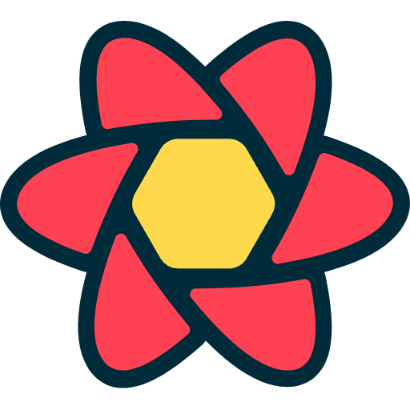
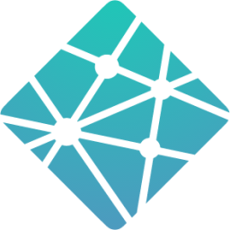

Ryan Raidt
Full Stack Web Developer
Passionate full-stack developer crafting modern, scalable web applications with React, Node.js, and PostgreSQL, focused on delivering exceptional user experiences.
About Me
Dedicated web development professional with experience in front-end and back-end programming, gained through immersive training at Fullstack Academy. Skilled in JavaScript, CSS, and adept at problem-solving in collaborative coding environments. Motivated by opportunities to create user-focused applications in a full-stack role, contributing to high-quality, scalable digital solutions.
Technical Skills
Frontend
- HTML5
- CSS3
- JavaScript
- React
-
 React Router
React Router
- Context API
-
 Chakra UI
Chakra UI
-  React Query
Backend
- Node.js
- Express.js
- Prisma
- PostgreSQL
- MongoDB
-
 Supabase
Supabase
- RESTful APIs
- JWT
Tools & DevOps
- VS Code
- Postman
- Git/GitHub
- Vite
- Render
-  Netlify
- Google OAuth
- CI/CD
Technical Projects
Capstone Project: Recipe Round Table
January 2, 2025 – January 29, 2025
- Developed a full-stack, community-driven recipe-sharing platform as part of an intensive software engineering program.
- Collaboratively contributed to backend development, including database schema design, API creation, and integration using Node.js, Prisma, and PostgreSQL.
- Built responsive user interfaces with React, ensuring a seamless and user-friendly experience across devices.
- Designed and implemented admin functionalities for user, recipe, and report management to enhance platform moderation capabilities.
- Leveraged tools like Vite for optimized development workflows and integrated Google OAuth for secure user authentication.
Tools and Technologies: JavaScript, React, Node.js, Prisma, PostgreSQL, Vite, Axios, bcrypt, JWT, Postman, Git/GitHub, dotenv, Multer.
GitHub Repository: https://github.com/RyanRaidt/recipeSite
Website Link: https://recipe-round-table-frontend.onrender.com/ (Please note that since it's hosted on Render's free plan, it may take a couple of minutes to spin up.)
Task Manager Pro
March 19, 2025
- Developed a full-stack task management application with secure user authentication and real-time task management.
- Implemented a modern, responsive UI using React and Chakra UI for an intuitive user experience.
- Created a robust RESTful API using Node.js and Express, with MongoDB for data storage.
- Integrated JWT authentication and bcrypt for secure user sessions and password hashing.
- Added features like task prioritization, status tracking, and toast notifications for user feedback.
Tools and Technologies: JavaScript, React, Node.js, Express, MongoDB, Chakra UI, JWT, bcrypt, Axios, Context API, Git/GitHub, Netlify
GitHub Repository: https://github.com/RyanRaidt/task-manager-pro
Website Link: https://ryan-task-manger-pro.netlify.app/
Job Tracker Application
March 28, 2025
- Developed a full-stack job application tracking system with secure user authentication.
- Implemented a modern, responsive UI using React and Chakra UI with dark/light mode support.
- Created a robust RESTful API using Node.js, Express, and PostgreSQL with Prisma ORM.
- Integrated JWT authentication for secure user sessions and data protection.
- Implemented features like job application tracking, status updates, and data persistence.
Tools and Technologies: JavaScript, React, Node.js, Express, PostgreSQL, Prisma, Chakra UI, JWT, React Query, React Router, Vite, Git/GitHub, Netlify, Render
GitHub Repository: https://github.com/RyanRaidt/job-tracker
Website Link: https://ryan-job-trackers.netlify.app/
Education
Web Development
OU Outreach in association with Fullstack Academy | October 2024 - January 2025
Immersive software engineering coding bootcamp focused on mastering HTML, JavaScript, and React foundations, front- and back-end development, and databases.
Key Achievements:
- Completed intensive 13-week program covering full-stack development
- Developed a full-stack applications using modern technologies
- Mastered core concepts of web development and software engineering
- Collaborated on team projects using industry-standard tools and practices
Core Curriculum:
- Frontend: React, JavaScript, HTML5, CSS3, Responsive Design
- Backend: Node.js, Express, RESTful APIs
- Tools: Git, GitHub, VS Code, Postman, Command Line
- Best Practices: Agile Development, Test-Driven Development, Code Reviews

Contact Me
ryanraidt1026@gmail.com | Kingfisher, OK